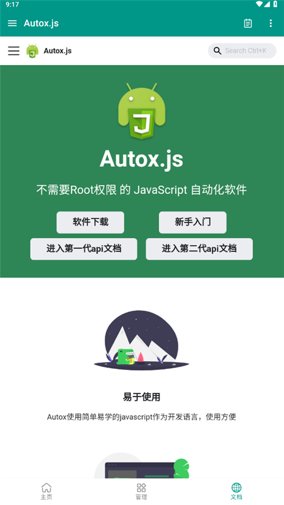

Auto.js 快问快答——手机上那些重复的事，能不能全交给它？
Auto.js 是安卓平台的无障碍自动化框架，用 JavaScript 写脚本就能操控其他 APP 的界面。整理了 7 组读者最常问的问题，覆盖定位、安装、核心用法、选择器、坑点和适合人群。
整理一篇关于 Auto.js 的快问快答。如果你用过它，这是一份查漏补缺的速查表；如果你刚听说，读完就能判断要不要装。
Auto.js 到底是什么？一句话讲清
Auto.js官网是一个安卓平台的自动化工具，核心思路是：让一段 JavaScript 代码去操控其他 APP 的界面。它通过安卓的「无障碍服务」读取当前屏幕上的控件树（按钮、文本、图片……），然后按照你的脚本规则点击、输入、滑动——像一个不知疲倦的手指替身。
它不是模拟器、不是虚拟机、也不是 hook 框架。它跑在你自己的手机上，用的是系统给无障碍功能的那套 API，所以不需要 root，也不会改动其他 APP 的代码。

谁真的需要装？四类典型用户
第一类是每天都要点一遍签到的人——支付宝蚂蚁森林、淘宝淘金币、京东 PLUS、拼多多果园……每个 APP 的签到按钮位置不同、文案不同，但 Auto.js 的选择器 API 可以精准定位，一次写好永久受益。
第二类是需要在真机上反复点 APP 的测试工程师——不能替代 Appium 那样的专业测试框架，但做快速手动回归效率很高：模拟完整交互流程、截图对比不同版本、统计按钮响应时间。
第三类是想做移动端数据采集的人——打开目标 APP → 翻页 → 截图 → OCR → 写文件，相比 PC 端爬虫绕过了部分反爬机制。
第四类是想写独立工具的开发者——Auto.js 的 UI 构建和 APK 打包能力让它超越了「脚本」范畴，可以写出完整的、带界面的安卓小工具，分发给身边人用。
怎么装？有门槛吗？
安装本身没门槛，安装包从官方下载拿，装上就行。但首次启动必须做一件事：去系统设置里开启无障碍服务。这是 Auto.js 能读取和操控其他 APP 界面的前提，不开的话什么脚本都跑不动。
另外一个常见误区：很多人以为 Auto.js 需要 root。不需要。它全程走无障碍通道，权限级别和一个读屏软件差不多。只有遇到系统级操作（比如改系统设置、批量安装卸载 APP）才需要额外权限，大多数日常脚本都不碰这些。
核心怎么用？三个选择器搞定 80% 场景
Auto.js 的脚本逻辑大部分是：选控件 → 操作控件。选控件靠三种选择器就覆盖绝大多数情况：
- 文本选择器：按界面上显示的字找，
text("签到")精确匹配，textContains("购买")包含匹配，textMatches("立.{0,2}购买")正则匹配，灵活度最高。 - ID 选择器：按资源 ID 找，
id("com.taobao.taobao:id/tv_price")，精准但不同 APP 的 ID 格式不一样。 - 类名选择器：按控件类型找，
className("android.widget.Button")，适合批量操作同一类控件。
这些选择器不是一次只能用一个——可以链式组合。比如你想找「屏幕底部区域内、可点击、文本包含确定的那个按钮」，就把 bounds、clickable、textContains 串起来。

看不懂控件树怎么办？布局分析器救你
刚上手最大的障碍是「我到底该用什么选择器？」。Auto.js 内置了布局分析器，打开后屏幕上所有控件会高亮显示，左上角弹出控件树结构——每个节点告诉你 className、text、id、description、bounds 这些属性值，点一下就能复制。
打开方式有三种：悬浮窗里点「布局分析」最方便，不需要切回 Auto.js；侧拉菜单里也能打开；代码里 auto.layoutInspector() 也能调起。拿到属性值之后，往选择器里填就行。这是写脚本之前最该用的工具，没有之一。想深入了解完整的 API 列表和边界情况，可以翻一下Auto.js文档。
filter 过滤是干嘛的？为什么说它是终极武器
前面的文本/ID/类名选择器都是 Auto.js 预设好的匹配条件，能覆盖 80% 场景，但总有覆盖不到的——比如「文本长度在 4 到 8 字符之间」「两个不同属性的 OR 组合」「文本是数字且大于 100」。
filter 让你写自己的判断函数，返回 true 的控件保留。用法是先加基础选择器缩小范围，再 .filter(function(view) { ... })——参数 view 是一个 UiObject，可以访问 text()、id()、className()、bounds()、visible()、clickable() 等全部控件属性。
但要注意性能：filter 需要遍历所有匹配控件执行函数，比普通选择器慢得多。千万不要裸用 filter，前面一定要先加 className("Button") 之类的基础选择器把范围缩到最小，filter 里也别放 sleep 或网络请求。
相对位置选择器什么时候用？
当两个按钮文案一样、类名一样，但在屏幕上的位置不同时，纯靠控件属性没法区分。这时候用相对位置：
- bounds：按屏幕像素区域匹配，
bounds(0, 1800, 1080, 2400).click()只点底部区域的按钮，避开顶部导航栏的同名按钮。 - 父子关系：先找容器再找子控件，
text("购买").findOne().parent().findOne(id("price_tag"))能拿到购买按钮旁边的价格文本。 - visible / clickable / enabled：排除被隐藏的、灰色禁用的控件。
这些组合起来能解决 APP 改版后选择器失效的常见问题——很多脚本挂掉不是因为控件属性变了，而是刚好碰到了另一个同名控件。
有哪些坑？五个高频踩雷点
第一，不要裸用 filter——会遍历整棵控件树，在复杂界面上卡顿明显。前面一定要加基础选择器。
第二，bounds 坐标要按实际分辨率算——换一台手机坐标就全变了。如果脚本要跨设备用，尽量用相对位置而不是绝对像素。
第三，Auto.js 不做任何拦截——脚本里如果写了无限循环、或者选错了控件点到了不该点的地方，它会老老实实地执行，没有撤销。所以写新脚本一定要先小范围测试。
第四，不要碰需要 root 或绕过付费的场景——Auto.js 本身不提供 root 能力，涉及系统级操作还是得用别的方案；破解授权违反使用条款，也可能触碰法律红线。
第五，iOS 用户没份——Auto.js 只支持安卓平台。iPhone 上想做类似自动化得走捷径（Shortcuts）或越狱路线。
值得长期用吗？
值不值取决于你有没有那种「每天都要点一遍」的重复操作。如果每天至少有一件事是在手机上机械重复点五分钟以上，Auto.js 大概率能帮你省时间，而且脚本写好了就是永久受益。如果只是偶尔点几下，花半小时学选择器就有点本末倒置了。最后一句：装一个，跑一次最简单的签到脚本，感受一下它能不能省掉你每天那三分钟。我整理的脚本素材和笔记在GitHub、Gitee、GitCode都同步了，哪能访问就用哪个。